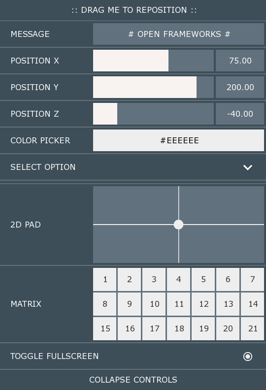
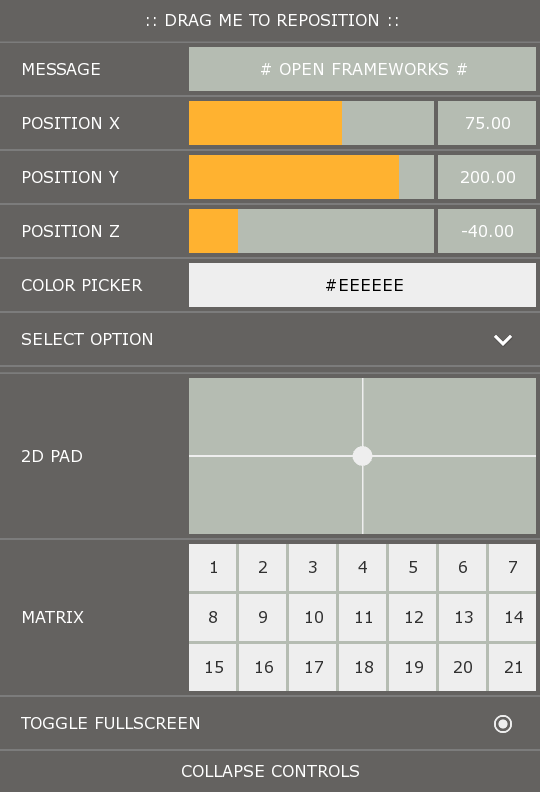

Theme 1
#pragma once
#include "ofxDatGuiTheme.h"
class ofxDatGuiTheme1 : public ofxDatGuiTheme {
public:
ofxDatGuiTheme1()
{
stripe.visible = false;
color.label = hex(0xF8F3F0);
color.background = hex(0x4C4743);
color.inputAreaBackground = hex(0xB5BCB2);
color.slider.fill = hex(0xFFB230);
color.slider.text = hex(0xFFFFFF);
color.textInput.text = hex(0xFFFFFF);
color.colorPicker.border = hex(0xF8F3F0);
color.matrix.hover.button = hex(0xC3A279);
color.matrix.selected.button = hex(0x4C4743);
init();
}
};

Theme 2
#pragma once
#include "ofxDatGuiTheme.h"
class ofxDatGuiTheme2 : public ofxDatGuiTheme{
public:
ofxDatGuiTheme2()
{
stripe.visible = false;
color.guiBackground = hex(0x001727);
color.label = hex(0xF8F3F0);
color.background = hex(0x162C3A);
color.inputAreaBackground = hex(0x61717D);
color.slider.fill = hex(0xF8F3F0);
color.slider.text = hex(0xFFFFFF);
color.textInput.text = hex(0xFFFFFF);
color.colorPicker.border = hex(0xF8F3F0);
color.matrix.hover.button = hex(0x55666F);
color.matrix.selected.button = hex(0x334553);
init();
}
};
